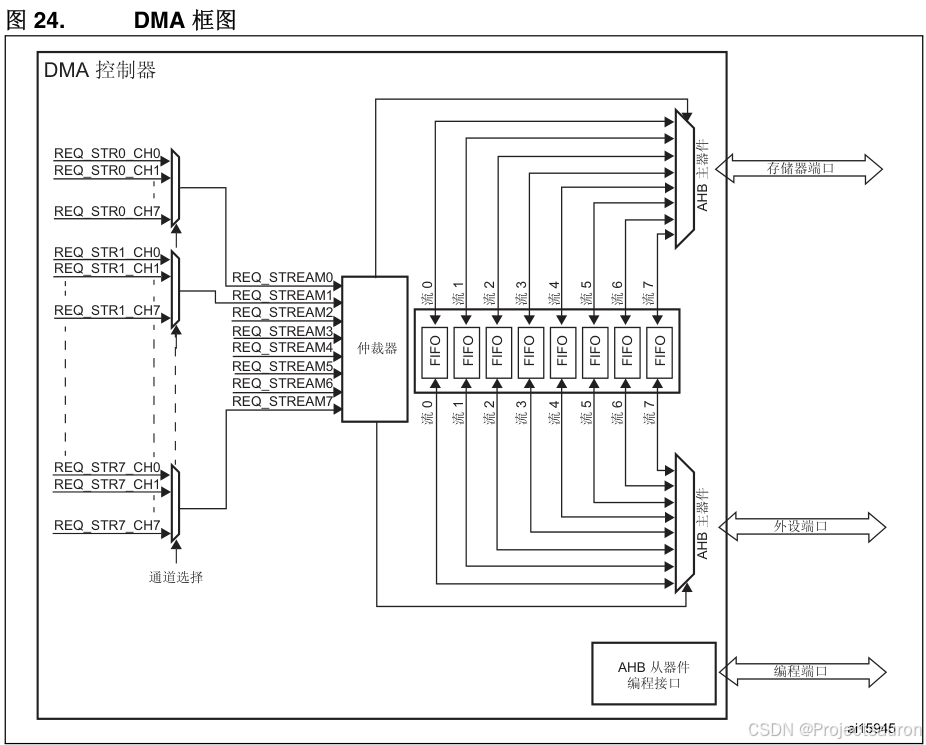

DMA 详解
[toc]
一、简介
DMA（Direct Memory Access，直接存储器访问）顾名思义，就是绕开 CPU 直接访问 Memory。在计算机中，相比 CPU，Memory 和外设的速度是非常慢的，因而在 Memory 和 Memory (或者 Memory 和外设)之间搬运数据，非常浪费 CPU 的时间，造成 CPU 无法及时处理一些实时事件。因此，工程师们就设计出来一种专门用来搬运数据的器件——DMA 控制器（DMA Controller，DMAC），协助 CPU 进行数据搬运。

由上图可知，DMA 无需 CPU 直接控制传输，也没有中断处理方式那样保留现场和恢复现场的过程，通过硬件为 RAM 与 I/O 设备开辟一条直接传送数据的通路，能使 CPU 的效率大为提高。
- 使用 DMA，对于高速设备而言，如硬盘，它不只是降低 CPU 的使用率，而且还能大大提高硬件设备的吞吐量。
- 因为对于这种设备，CPU 直接供应数据的速度太低。 CPU 一个总线周期最多只能存取一次总线，而且对于 ARM 设备，它不能把内存中 A 地址的值直接搬到 B 地址。它只能先把 A 地址的值搬到一个寄存器，然后再从这个寄存器搬到 B 地址。也就是说，对于 ARM，要花费两个总线周期才能将 A 地址的值送到 B 地址。
- 而 DMA 就不同了，一般系统中的 DMA 都有突发（Burst）传输的能力，在这种模式下，DMA 能一次传输几个甚至几十个字节的数据，所以使用 DMA 能使设备的吞吐能力大为增强。
使用 DMA 时我们必须要注意如下几点：
- DMA 使用物理地址，程序是使用虚拟地址的，所以配置 DMA 时必须将虚拟地址转化成物理地址
因为程序使用虚拟地址，而且一般使用 Cache 地址，所以 Cache 中的内容与其物理地址（内存）的内容不一定一致，所以在启动 DMA 传输前一定要将该地址的 Cache 刷新，即写入内存 - OS 并不能保证每次分配到的内存空间在物理上是连续的。尤其是在系统使用过一段时间而又分配了一块比较大的内存时。所以每次都需要判断地址是不是连续的，如果不连续就需要把这段内存分成几段让 DMA 完成传输
二、STM32 中的 DMA
刚才简单介绍了一下，什么是 DMA，下面结合实例，看一下 DMA 是怎么在 STM32 中使用的。
1、DMA 框图
这是 STM32F4xx 设备的 DMA 框图：

每个通道都直接连接专用的硬件 DMA 请求，每个通道都同样支持软件触发。这些功能通过软件来配置：
- 在同一个 DMA 模块上，多个请求间的优先权可以通过软件编程设置（共有四级：很高、高、中等和低），优先权设置相等时由硬件决定（请求 0 优先于请求 1，依此类推）；
- 独立数据源和目标数据区的传输宽度（字节、半字、全字），模拟打包和拆包的过程。源和目标地址必须按数据传输宽度对齐；
- 支持循环的缓冲器管理；
- 每个通道都有 3 个事件标志（DMA 半传输、DMA 传输完成和 DMA 传输出错），这 3 个事件标志逻辑或成为一个单独的中断请求；
- 存储器和存储器间的传输、外设和存储器、存储器和外设之间的传输；
- FLASH、SRAM、外设的 SRAM、APB1、APB2 和 AHB 外 设均可作为访问的源和目标；
- 可编程的数据传输数目：最大为 65535。
中间的 FIFO 区，每个数据流（总共 8 个数据流）都有一个独立的 FIFO，可以实现存储器接口到外设接口之间的数据长度==非对齐传输==。
1.1 传输方式
DMA 的作用就是实现数据的直接传输，而去掉了传统数据传输需要 CPU 寄存器参与的环节，主要涉及三种情况的数据传输，但本质上是一样的，都是从内存的某一区域传输到内存的另一区域（外设的数据寄存器本质上就是内存的一个存储单元）。三种情况的数据传输如下：
- 外设到内存)
- 内存到外设
- 内存到内存
DMA1控制器 AHB 外设端口与DMA2控制器的情况不同，不连接到总线矩阵，因此，仅DMA2数据流能够执行内存到内存的传输
在发生一个事件后，外设向 DMA 控制器发送一个请求信号。DMA 控制器根据通道的优先权处理请求。当 DMA 控制器开始访问发出请求的外设时，DMA 控制器立即发送给它一个应答信号。当从 DMA 控制器得到应答信号时，外设立即释放它的请求。一旦外设释放了这个请求，DMA 控制器同时撤销应答信号。DMA 传输结束，如果有更多的请求时，外设可以启动下一个周期。
总之，每次 DMA 传送由 3 个操作组成：
- 从外设数据寄存器或者从当前外设/存储器地址寄存器指示的存储器地址取数据，第一次传输时的开始地址是
DMA_CPARx或DMA_CMARx寄存器指定的外设基地址或存储器单元； - 存数据到外设数据寄存器或者当前外设/存储器地址寄存器指示的存储器地址，第一次传输时的开始地址是
DMA_CPARx或DMA_CMARx寄存器指定的外设基地址或存储器单元； - 执行一次
DMA_CNDTRx寄存器的递减操作，该寄存器包含未完成的操作数目。
DMA 有以下两种传输方式：
DMA_Mode_Normal（正常模式）：当一次 DMA 数据传输完后，停止 DMA 传送 ，也就是==只传输一次==DMA_Mode_Circular（循环传输模式）：当传输结束时，硬件自动会将传输数据量寄存器进行重装，进行下一轮的数据传输。 也就是==多次传输模式==
1.2 仲裁器
仲裁器用于仲裁数据流 0~7 的请求优先级，保证数据有序传输。
仲裁器根据通道请求的优先级来启动外设/存储器的访问。优先权管理分2个阶段：
- 软件：每个通道的优先权可以在
DMA_CCRx寄存器中设置，有 4 个等级：- 最高优先级
- 高优先级
- 中等优先级
- 低优先级；
- 硬件：如果 2 个请求有相同的软件优先级，则较低编号的通道比较高编号的通道有较高的优先权。比如：如果软件优先级相同，通道 2 优先于通道 4。
注意： 在大容量产品和互联型产品中，DMA1 控制器拥有高于 DMA2 控制器的优先级。
1.3 数据流
仅限于 Cortex-M4 内核上有数据流
8 个 DMA 控制器数据流都能够提供源和目标之间的单向传输链路。每个数据流配置后都可以执行：
- 常规类型事务：存储器到外设、外设到存储器或存储器到存储器的传输。
- 双缓冲区类型事务：使用存储器的两个存储器指针的双缓冲区传输（当 DMA 正在进行自/至缓冲区的读/写操作时，应用程序可以进行至/自其它缓冲区的写/读操作）。要传输的数据量（多达 65535）可以编程，并与连接到外设 AHB 端口的外设（请求 DMA 传输）的源宽度相关。每个事务完成后，包含要传输的数据项总量的寄存器都会递减。
STM32F4xx 有两个 DMA：DMA1、DMA2，其请求映射如下表：

1.4 指针递增模式
根据 DMA_SxCR 寄存器中 PINC 和 MINC 位的状态，外设和存储器指针在每次传输后可以自动向后递增或保持常量。当设置为增量模式时，下一个要传输的地址将是前一个地址加上增量值。
通过单个寄存器访问外设源或目标数据时，禁止递增模式十分有用。
如果使能了递增模式，则根据在 DMA_SxCR 寄存器 PSIZE 或 MSIZE 位中编程的数据宽度，下一次传输的地址将是前一次传输的地址递增 1个数据宽度、2个数据宽度或 4个数据宽度。
1.5 存储器到存储器模式
DMA 通道的操作可以在没有外设请求的情况下进行，这种操作就是存储器到存储器模式。
当设置了 DMA_CCRx 寄存器中的 MEM2MEM 位之后，在软件设置了 DMA_CCRx 寄存器中的 EN 位启动 DMA 通道时，DMA 传输将马上开始。当 DMA_CNDTRx 寄存器变为 0 时，DMA 传输结束。存储器到存储器模式不能与循环模式同时使用。
这里要注意仅 DMA2 的外设接口可以访问存储器，所以仅 DMA2 控制器支持存储器到存储器的传输，DMA1 不支持。
1.6 DMA 中断
每个 DMA 通道都可以在 DMA 传输过半、传输完成和传输错误时产生中断。为应用的灵活性考虑，通过设置寄存器的不同位来打开这些中断。
2、DMA 配置
经过刚才的介绍可以知道，要配置 DMA，大致要实现如下内容：
- 源地址（Source Address）：源地址表示数据传输的起始地址，即外设设备中数据缓冲区的地址。DMA 将从这个地址开始读取数据。
- 目标地址（Destination Address）：目标地址表示数据传输的目的地址，即系统内存中的指定地址。DMA 将数据传输到这个地址。
- 数据长度（Data Length）：数据长度表示需要传输的数据大小。它可以以字节、字或者其他单位进行表示。
- 控制信息（Control Information）：控制信息包括传输模式、中断使能等参数。在传输过程中，DMA 根据这些参数来控制数据的传输行为。
- DMA 通道选择（DMA Channel Selection）：在具有多个 DMA 通道的系统中，选择要使用的 DMA 通道。
- DMA 传输模式（DMA Transfer Mode）：指定DMA传输的模式，如单次传输模式、循环传输模式等。
- DMA 中断使能（DMA Interrupt Enable）：用于控制 DMA 传输完成时是否产生中断。
下面的代码实现了 USART1 发送接口的 DMA 配置：
1 | DMA_InitTypeDef DMA_InitStructure; |
中断函数如下：
1 | void DMA2_Stream7_IRQHandler(void) |